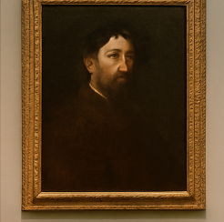

1. Il dipinto che mi ha colpito di più
Un'opera d'arte affascinante vista nella galleria principale
Questo dipinto ha catturato per i suoi colori intensi e per l'espressione del volto del personaggio raggigurato. È come se raccontasse una storia senza parole
2. Un'antica scultura
 Scultura romana in marmo esposta nella sala archeologica
Scultura romana in marmo esposta nella sala archeologica
La scultura era alta quasi due metri e mostrava un antico guerriero romano. I dettagli del viso e dell'armatura erano incredibilmente realistici.
Le cose che ho imparato oggi:
- Le statue romane venivano spesse dipinte a colori vivaci
- Molti dipinti nascondono simboli e significati nascosti
- Ogni opera ha una storia unica